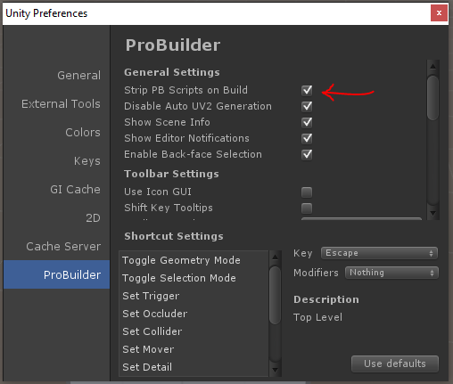
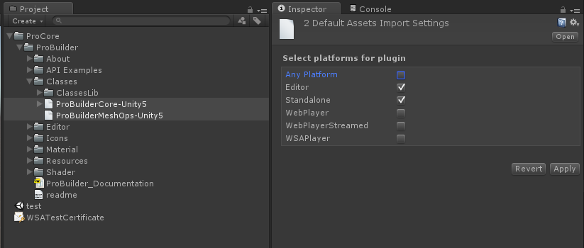

Error building Player
Usually seen with console errors:
Error building Player: UnityException: Failed to run serialization weaver with command
To get things compiling again, you need to mark the ProBuilder DLLs as Editor only.
This does mean you won't be able to access any of the ProBuilder API at runtime. Fortunately if you're just using ProBuilder to build levels you don't need to worry about that.
-
First make sure that
Strip PB Scripts on Buildis checked in the Preferences/ProBuilder panel.
-
Next, locate
ProBuilderCore-Unity5.dllandProBuilderMeshOps-Unity5.dllin your project.
-
With both
ProBuilderCore-Unity5andProBuilderMeshOps-Unity5selected, in the Inspector window uncheck "Any Platform." Then toggle both "Editor" and "Standalone."
If you're using ProBuilder 2.5 or lower, some errors will appear when scripts reload. Open the following files (in ProBuilder/API Examples):
- IcoBumpin.cs
- HueCube.cs
- RuntimeEdit.cs
In each of these files, place this line at the very beginning:
#if UNITY_EDITOR || UNITY_STANDALONE
and this line at the very end:
#endif
For example, here's what RuntimeEdit.cs looks like:
#if UNITY_STANDALONE || UNITY_EDITOR
using UnityEngine;
using System.Collections;
using ProBuilder2.Common;
namespace ProBuilder2.Examples
{
/**
* \brief This class allows the user to select a single face at a time and move it forwards or backwards.
* More advanced usage of the ProBuilder API should make use of the pb_Object->SelectedFaces list to keep
* track of the selected faces.
*/
public class RuntimeEdit : MonoBehaviour
{
// ... etc
}
}
#endif
Now compile your project and run!
Missing Icons
If you upgraded ProBuilder and are now missing icons in the toolbar, first try restarting Unity.
If that does not work,
- Delete this folder:
ProCore/ProBuilder/Resources/GUI - Re-import ProBuilder from Asset Store / ProCore Downloads